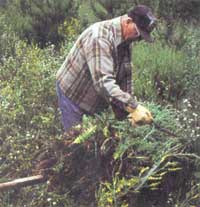

Stubborn Carrots And Wheelbarrows
April/May 1993
COUNTRY LORE
Carrot stuck in the ground? Solution: Screw it up.
Wheelbarrow Blues
Having trouble with items falling from your heaping-full wheelbarrow? If so, you'll want to try an idea that my father, Cledit Nelson of Frazee, Minnesota, had. One day Dad was pulling thistles in a field, and it didn't take him long to get a bulk load on his wheelbarrow. The plants weren't heavy, so he wanted to haul as many as possible to save trips to the compost pile, but many of the weeds kept falling off.
It occurred to him that he could use a common black rubber "tie-down" strap with metal-hook ends-the type normally used for tarps, boat covers, and so on. He hooked a strap end to one side of the wheelbarrow, brought the strap over the load's center, and hooked it to the other side. His hefty thistle load stayed in place, and required just one strap.
A tie-down of about three-feet long might do, but it depends on the wheelbarrow's width and the strap's elasticity. On many wheelbarrows the strap's hooks will easily catch, but on others you might need to drill holes, centering one on each side of the 'barrow to accommodate the hooks.
Also, some materials, like dry leaves, are more difficult to haul. To keep most of the leaves in place, place a tree branch or two over the leaves before you strap it down. When not in use, hook the strap onto the wheelbarrow handles for easy access.
-Gary Nelson
Oakland, Arkansas
Uncorking the Carrot
Have you ever gone to pull a carrot from your garden and had the top break right off? Who wants to dig up the rest of the carrot once that happens? Well, I have found a way to make it easy: use a cork screw. Screw it in through the part that is left in the ground and then yank. We even have a corkscrew in which the "T" handle comes off. First we screw in the center portion (this is easier because there's no handle to get tangled in the greens), then we attach the handle, and pull it right out.
-Craig Johnson
Pullman, Washington
A Muddy Finish
I recently built a badly needed cabinet in my kitchen. It is 4' wide, 16" deep, and about ceiling height. In the interest of economy, I used waferboard for the doors. What a mistake that was! The waferboard's rough texture looked awful, even after applying several coats of paint. Then I came up with an idea: I applied a thin coat of mud (sheet-rock compound) to the face of the door using a six-inch mud knife. The result was a perfectly smooth cabinet that matched the texture of the sheet-rock walls of the kitchen. It looks great.
-James R. Brunner
Las Cruces, New Mexico
A Healthy Slug Remedy
You've all heard of using salt to kill slugs. Well, I place a handful of bran every eight or 10 feet along walks and garden paths. Slugs will collect on these little heaps of bran and you can sweep them up come morning.
-WC. Thompson
Newtonville, Massachusetts
Hold 'em at Needlepoint
I heard some unwelcome buzzing near my kitchen windows the other day and realized there were insects outside who either wanted to come in or build a nest way too close for comfort. Since there was a tiny hole in one of my screens, I decided to stop these unwanted guests from entering with a plastic needlepoint canvas from my sewing basket. I laced the canvas right onto the screen with dental floss (you can also use fishing line). This made a durable blockade, and because of the holes in the canvas, it allowed for plenty of air circulation as well.
-Dee L. Getchell
East Lyme, Connecticut
Who Needs Mud Pies Anyway?
It may be time to get rid of sandboxes. Many kids, particularly toddlers, accidentally get sand in their eyes and mouths. So I filled a sandbox with 25 pounds of birdseed for my two-year-old daughter. Now my husband and I don't have to worry about injuries and it's easy to sweep up when she tracks it in the house. As with sand, children can't resist pouring the box contents on the grass or sidewalk-a wonderful way to feed birds.
-Cynthia Mullis
Streetman, Texas
Editor's note: Save Country Lore! We know you love reading lore, but unfortunately, fewer lore letters have been rolling in. Please keep this department alive by sending in your helpful hints and suggestions to: "Country Lore," c/o Mother Earth News, P.O. Box 129, Arden, NC 28704. Please include your phone number and a photo.
|
 A three-foot long strap is the best way to keep weeds down. |
 |
|